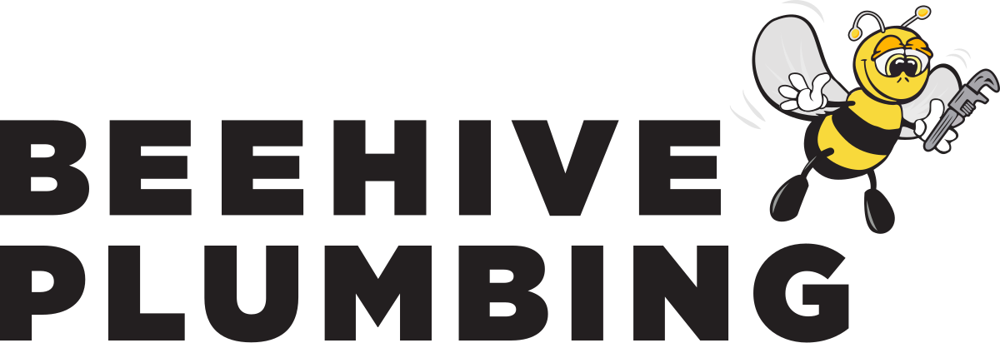
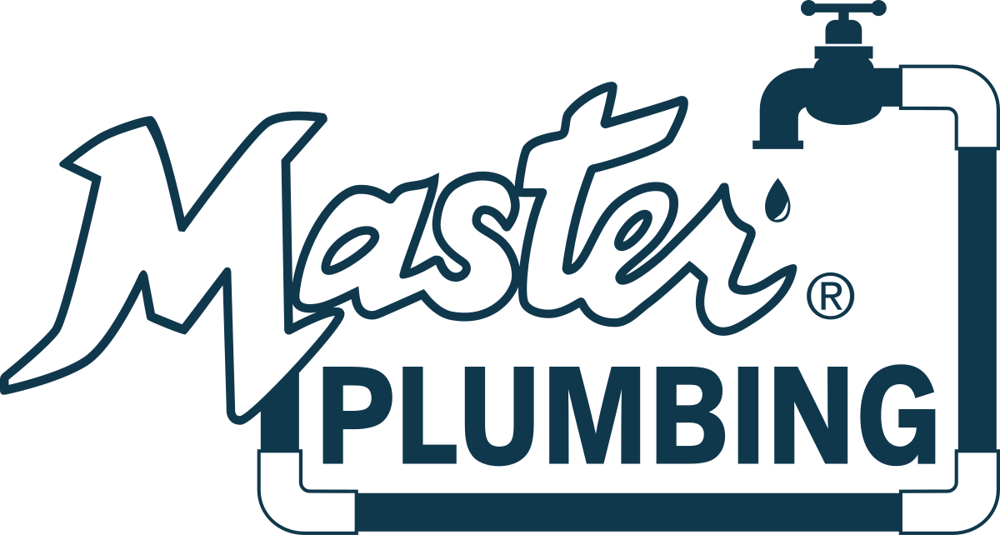
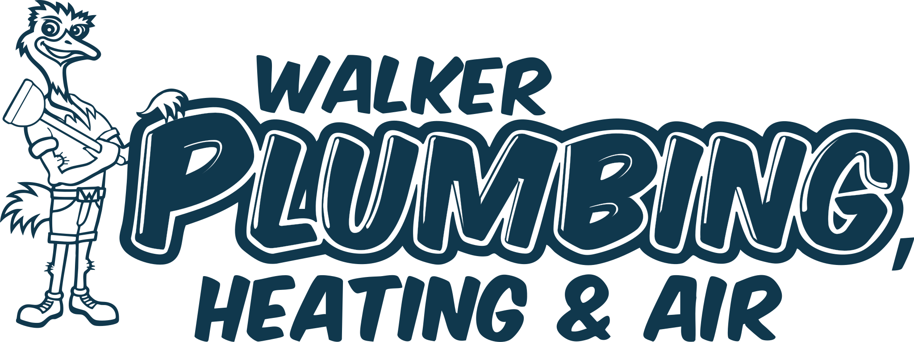
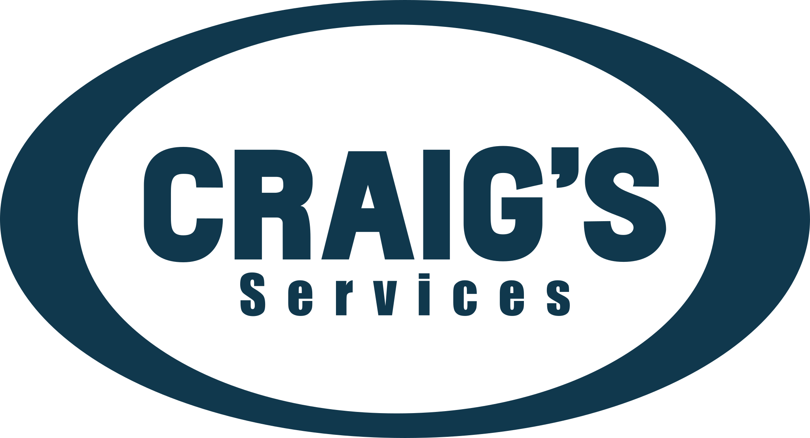

Bottom Line
The goal is not only reporting clarity. It is a framework for growth testing.
By the end of 120 days, Jacqueline should have one trustworthy scorecard, one shared language for source and funnel stages, one practical testing rhythm, and a clearer view of where to standardize first. Once the systems are instrumented cleanly, the team can run tests faster, see impact sooner, rule out weak ideas quickly, and scale strong ideas across brands with more confidence.
Interactive Dashboard
Marketing Operations Dashboard Preview
This working example shows how the 120-day plan can turn into an operating view: portfolio health, Beehive pilot drilldown, funnel leakage, channel and campaign performance, offline media attribution, testing priorities, budget moves, and forecasting. Values are illustrative until IHS source systems are validated.
Needs Matrix
The six operating needs this role is really being asked to solve.
This is how I would frame the role near the top: six connected workstreams that move from cleaner attribution to better funnel control, stronger unit economics, tighter operational linkage, cleaner data connections, and more useful automation.
A
Lead & Attribution
Goal: make source truth dependable enough to connect demand creation to booked and completed revenue.
- UTM taxonomy and lead source tracking
- Multi-touch attribution and first-touch vs. last-touch views
- Offline attribution via MMM
B
Funnel & Conversion
Goal: make stage-level leakage visible so marketing, intake, and booking can improve together.
- Stage-level funnel dashboards
- Call-center conversion analysis and speed-to-first-touch
- Leakage diagnostics by stage and brand
C
CAC, ROAS & LTV by Channel and Brand
Goal: give leadership a clearer read on efficiency, payback, and where to scale or pull back.
- Channel-level CAC and incrementality-adjusted ROAS
- Cohort LTV and payback period
- LTV:CAC ratio by brand and channel
D
Operational Performance & CS Feedback Loop
Goal: connect acquisition quality to service outcomes instead of stopping at lead volume alone.
- Marketing-to-service-completion linkage
- Complaint and retention signals tied to acquisition source
- Revenue per lead by brand, channel, and service path
E
Data Infrastructure & Connections
Goal: reduce silos by making the core systems speak the same language and hand data off cleanly.
- CRM, marketing platform, and analytics integrations
- Shared schema, API and ETL pipelines, and data contracts
- Lead-routing automation and cleaner cross-system handoffs
F
AI & Automation Layer
Goal: cut reporting lag and manual effort while making the measurement layer easier to trust and use.
- Automated reporting and LLM-assisted narrative summaries
- Anomaly detection and automated data-quality alerts
- Reduction of manual reporting hours
Brand Portfolio
The brands this system needs to support.
These are the operating companies currently listed under Intermountain Home Services. The measurement layer should let Jacqueline compare demand quality, booking efficiency, and growth performance across them without flattening away meaningful brand differences.

Beehive Plumbing

Master Rooter

Walker / St. George

Craig's Services
Lifecycle Map
The customer journey the scorecard has to cover.
Intermountain can build an edge by measuring all the way from first touch through completed service, then into repeat and referral behavior. That is the bridge between marketing and true revenue operations.
Stage 1First Touch
Channel, campaign, and offer begin the demand path.
Stage 2Call / Form
Call tracking, form capture, and speed-to-response start shaping quality.
Stage 3Booked Job
This is the clearest early proof that media and call intake are working together.
Stage 4Completed Service
The revenue event needs to connect back to the source and campaign.
Stage 5Repeat Customer
Follow-up and lifecycle marketing turn one-time jobs into higher LTV.
Stage 6Referral / NPS
The cleanest downstream quality signal is a customer who returns and refers.
Canonical Stack
Observed current public stack vs. the growth stack I would standardize toward.
Publicly visible evidence suggests Intermountain is partly standardized at the ops layer and still siloed at the web and tracking layer. That is a good starting point for a MOps analyst because the first 120 days can create clarity without forcing everything into one sprint.
Observed Current Public Stack
Partly standardized, partly siloed.
Sites
Most brand sites appear to run on WordPress with WP Engine and Cloudflare, but not all brands are uniform.
Tracking
GTM appears on most brands, but container IDs vary by brand, which points to tracking silos and inconsistent governance.
Acquisition
Google Ads, Meta, and call tracking appear unevenly across brands rather than in one obvious shared pattern.
Ops layer
ServiceTitan appears to be the likely shared operating platform, while Power BI is explicitly named in the role.
WordPress
WP Engine
Cloudflare
GTM
 Google Ads
Meta
Google Ads
Meta
 CallRail
CallRail
 ServiceTitan
ServiceTitan
 Power BI
Power BI
Target Standardized Growth Stack
One scorecard, one taxonomy, one testing rhythm.
Shared taxonomy
Standard UTMs, campaign names, lead-source logic, and funnel-stage definitions across brands.
Closed-loop handoff
Connect first touch, calls, booked jobs, completed service, and revenue back into one weekly view.
Scorecard layer
Power BI becomes the place Jacqueline can compare ROAS, CAC, calls per day, and services booked per day by brand.
Testing layer
Once the data is trustworthy enough, growth tests can be run and judged quickly instead of by feel.
Google Ads
 GA4
GTM Governance
CallRail
ServiceTitan
Power BI
GA4
GTM Governance
CallRail
ServiceTitan
Power BI
120-Day Plan IHS
Four phases: inventory, stabilize, operationalize, then scale.
Weeks 1 - 2
Brand stack inventory
Catalog CMS, GTM container, analytics tags, ad pixels, call tracking, scheduler, and the handoff into ServiceTitan where visible.
Weeks 2 - 3
Tracking audit
Rank the broken handoffs by business impact so the first fixes are tied to better decisions, not just cleaner dashboards.
Week 4
Growth baseline scorecard
Get spend, leads, calls, calls per day, booked jobs, services booked per day, CAC, ROAS, and revenue into one first-pass view by brand.
End of Day 30
- Brand Stack Inventory & Standardization Matrix
- Growth Baseline Scorecard
- Tracking Audit
| Brand | Spend | Calls / day | Services booked / day | CAC | ROAS |
|---|
| Superior | $185K | 41 | 8.3 | $746 | 4.2 |
| SameDay | $140K | 34 | 7.1 | $654 | 4.0 |
| Beehive | $92K | 24 | 5.2 | $590 | 3.6 |
| Diamond | $88K | 22 | 4.7 | $620 | 3.4 |
Weeks 5 - 6
Shared tracking governance proposal
Set standards for GTM, UTMs, event names, lead-source logic, and the offline conversion handoff into reporting.
Weeks 7 - 8
Growth baseline scorecard v2
Harden the first-pass scorecard so it is dependable enough to use in weekly leadership conversations.
Weeks 9 - 10
Cross-brand weekly scorecard
Give Jacqueline a Power BI scorecard that is simple enough to scan weekly and detailed enough to act on.
End of Day 60
- Shared Tracking Governance Proposal
- Growth Baseline Scorecard v2
- Cross-Brand Weekly Scorecard
| Workstream | Status | Focus |
|---|
| Tracking governance | In place | UTMs, GTM, source logic |
| Scorecard v2 | Live | Calls, bookings, ROAS, CAC |
| Cross-brand view | Live | Compare brands weekly |
Days 61 - 70
Friday growth brief
Turn the scorecard into a weekly scale / fix / test rhythm grounded in ROAS, CAC, booked-job rate, and services booked per day.
Days 71 - 80
Closed-loop attribution v0
Connect source quality to calls, booked work, and early revenue outcomes where the data already supports it.
Days 81 - 90
Attribution + leakage layer
Separate media issues from booking, service, and follow-up issues so channels are not blamed for downstream operational leaks.
End of Day 90
- Weekly Growth Review
- Closed-Loop Attribution v0
- Leakage Layer
ScaleSuperior – Paid Search
ROAS is healthy, calls per day are rising, and services booked per day is holding above target.
FixSameDay – Meta Leads
Lead volume looks fine, but booked-job rate is lagging. Review routing, offer quality, and response speed before adding spend.
TestBeehive – Branded Search
Reported ROAS is strong, but incrementality is not clear yet. Run a controlled test before treating it as pure growth.
Days 91 - 100
Brand benchmark
Compare CAC, ROAS, booked-job rate, calls per day, services booked per day, and early payback across brands.
Days 101 - 110
Testing queue
Prioritize the first branded search, geo, offer, or routing tests worth running once the measurement layer is trustworthy.
Days 111 - 120
Stack standardization roadmap
Recommend where shared governance should go first so the biggest silos are addressed in the next quarter.
End of Day 120
- Brand Efficiency Benchmark
- Budget Move Board
- Stack Standardization Roadmap
Scale
Increase spend where ROAS is holding, CAC is stable, and services booked per day is rising.
Fix
Hold spend where calls are coming in but booked-job rate or service completion is weak.
Test
Run quick tests where reported efficiency looks strong but incrementality is still uncertain.
What I Would Need
A few early conditions make the plan move much faster.
System access
- Ad platforms, GA4, call tracking, ServiceTitan or adjacent ops data, and revenue fields.
- Enough access to verify how source and booking data are currently stitched together.
Leadership alignment
- Regular review time with Jacqueline in the first 120 days.
- Support for shared taxonomy and tracking governance across brands.
Operating honesty
- Permission to call out where the leak is downstream, not just in the media.
- Agreement that the scorecard exists to improve decisions, not just to report activity.